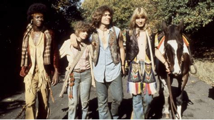
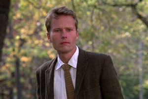
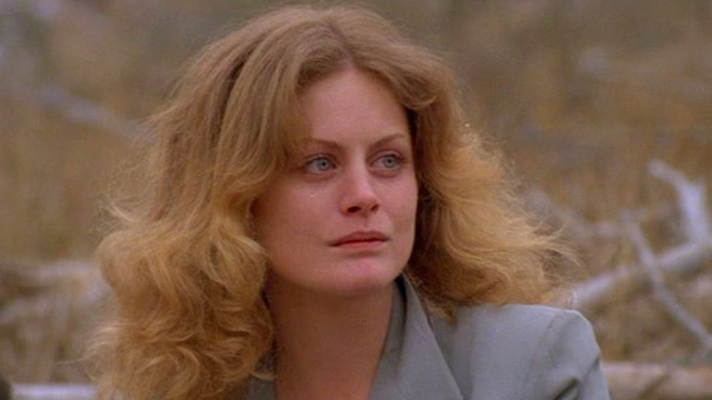

Történet
Szereplők
Fogadtatás
Szereplők
Williams – George Berger
Beverly D’Angelo – Sheila Franklin
John Savage – Claude Bukowski
Annie Golden – Jeannie
Dorsey Wright – Hud (Lafayette)
Don Dacus – Woof
Richard Bright – Fenton
Miles Chapin – Steve
Michael Jeter – Sheldon
  